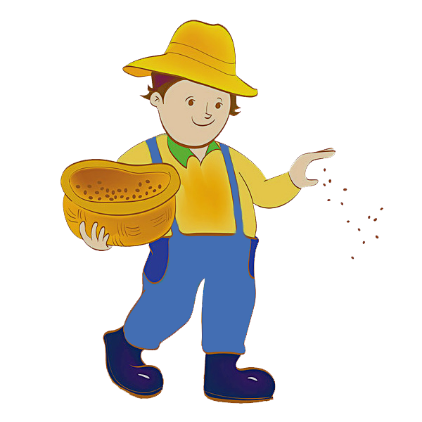

Информация
Текущий уровень: {{level}}
Необходимо собрать: {{exp}}
Собрано за всё время: {{allpoints}}
Фермеров работают: {{farmerscount}}
Семян с собой: {{seedcount}}
На данной работе вам предстоит сажать семена, выращивать их. Затем собирать и продавать на рынке по ценам, которые имеются на тот момент.